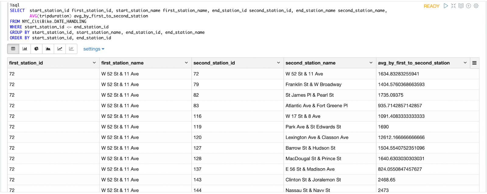
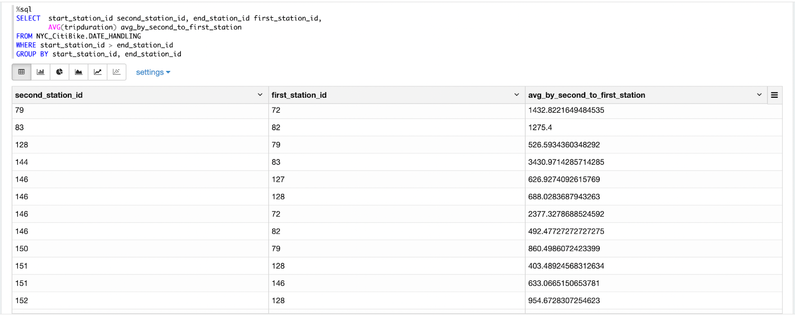
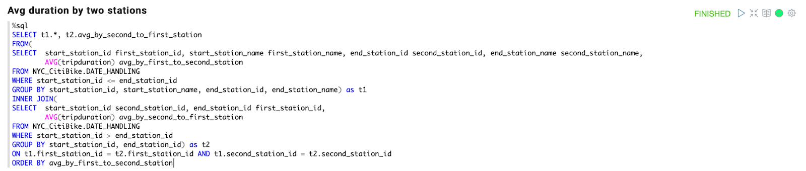
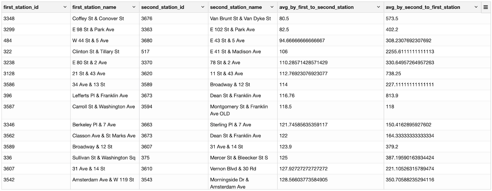
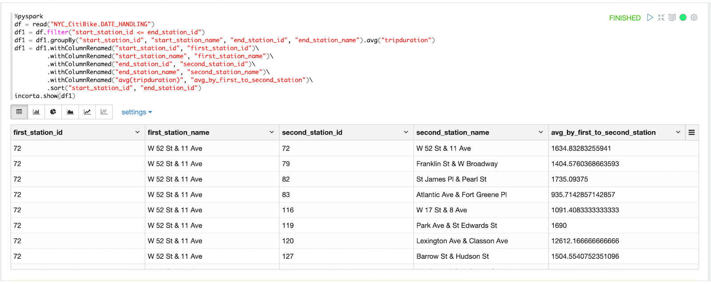
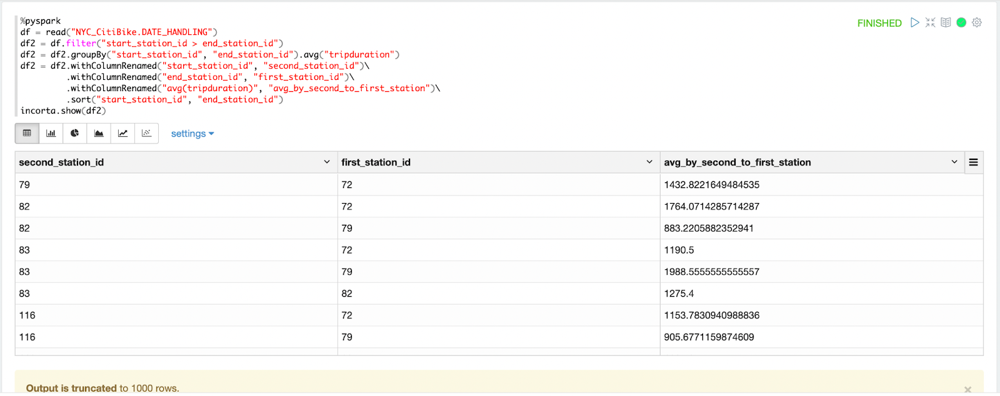
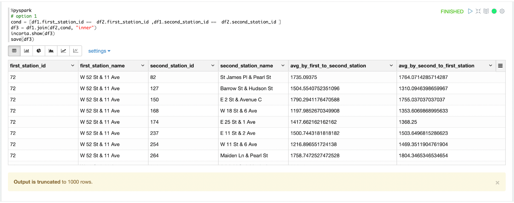
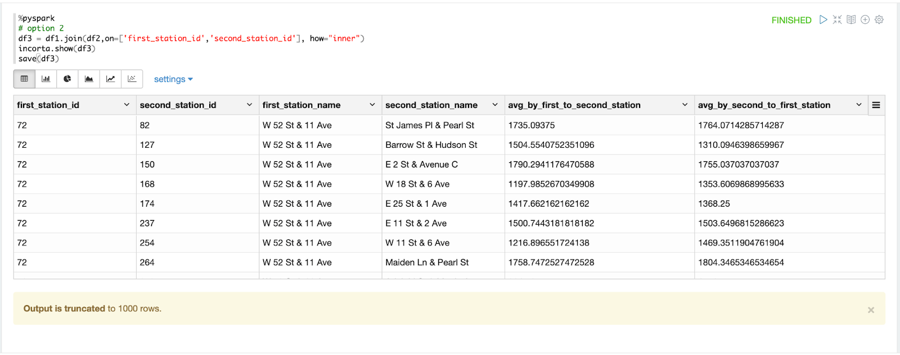

此篇 Codelab 將要藉由 NYC Citibike 資料，計算兩自行車站之間的平均使用時間，並且也藉由這個例子，比較 SQL 和 PySpark 中，JOIN 的不同寫法。
這篇我們會用到 INNER JOIN 將從A站到B站的平均時間，和從B站到A站的平均時間，放到同一個資料表內，進行比較和探討差異的原因。
先分別列出 start_station_id , start_station_name , end_station_id , end_station_name 作為分組標準，將 start station 命名為 first station ，將 end station 命名為 second station，首先找到從 first station 到 second station 的平均租借時間，當作第一個資料表，並且僅篩選 start_station_id <= end_station_id 的資料，以避免後面 JOIN 的時候重複。
%sql
SELECT start_station_id first_station_id, start_station_name first_station_name, end_station_id second_station_id, end_station_name second_station_name,
AVG(tripduration) avg_by_first_to_second_station
FROM NYC_CitiBike.DATE_HANDLING
WHERE start_station_id <= end_station_id
GROUP BY start_station_id, start_station_name, end_station_id, end_station_name
ORDER BY start_station_id, end_station_id
第二步，再將 start_station_id , start_station_name , end_station_id , end_station_name 分別列出作為分組標準，將 start station 命名為 second station ，將 end station 命名為 first station，正好和前一個資料表相反，讓我可以找到同樣兩站但是方向相反的平均租借時間，找到從 second station 到 first station 的平均租借時間，當作第二個資料表，並且僅篩選 start_station_id > end_station_id 的資料，以避免後面 JOIN 的時候重複。
%sql
SELECT start_station_id second_station_id, end_station_id first_station_id,
AVG(tripduration) avg_by_second_to_first_station
FROM NYC_CitiBike.DATE_HANDLING
WHERE start_station_id > end_station_id
GROUP BY start_station_id, end_station_id
將前面兩步驟所做出來的資料表做 JOIN ，將兩資料表結合成一表，以利比較，最後再以 avg_by_first_to_second_station 作為排序標準，找出兩站間平均租間時間最短的組合，比較來回的時間差異，並且想藉由時間推估距離，再和地圖上實際距離作為比較，探討其中的差異
%sql
SELECT t1.*, t2.avg_by_second_to_first_station
FROM(
SELECT start_station_id first_station_id, start_station_name first_station_name, end_station_id second_station_id, end_station_name second_station_name,
AVG(tripduration) avg_by_first_to_second_station
FROM NYC_CitiBike.DATE_HANDLING
WHERE start_station_id <= end_station_id
GROUP BY start_station_id, start_station_name, end_station_id, end_station_name) as t1
INNER JOIN(
SELECT start_station_id second_station_id, end_station_id first_station_id,
AVG(tripduration) avg_by_second_to_first_station
FROM NYC_CitiBike.DATE_HANDLING
WHERE start_station_id > end_station_id
GROUP BY start_station_id, end_station_id) as t2
ON t1.first_station_id = t2.first_station_id AND t1.second_station_id = t2.second_station_id
ORDER BY avg_by_first_to_second_station

基本上利用同樣的方法，先篩選 start_station_id <= end_station_id 的資料，以避免後面 JOIN 的時候重複，再分別列出 start_station_id , start_station_name , end_station_id , end_station_name 作為分組標準，將 start station 命名為 first station ，將 end station 命名為 second station，並且找到從 first station 到 second station 的平均租借時間，當作第一個資料表。
%pyspark
df = read("NYC_CitiBike.DATE_HANDLING")
df1 = df.filter("start_station_id <= end_station_id")
df1 = df1.groupBy("start_station_id", "start_station_name", "end_station_id", "end_station_name").avg("tripduration")
df1 = df1.withColumnRenamed("start_station_id", "first_station_id")\
.withColumnRenamed("start_station_name", "first_station_name")\
.withColumnRenamed("end_station_id", "second_station_id")\
.withColumnRenamed("end_station_name", "second_station_name")\
.withColumnRenamed("avg(tripduration)", "avg_by_first_to_second_station")\
.sort("start_station_id", "end_station_id")
incorta.show(df1)
第二步，一樣先僅篩選 start_station_id > end_station_id 的資料，以避免後面 JOIN 的時候重複，再將 start_station_id , start_station_name , end_station_id , end_station_name 分別列出作為分組標準，將 start station 命名為 second station ，將 end station 命名為 first station，正好和前一個資料表相反，讓我可以找到同樣兩站但是方向相反的平均租借時間，找到從 second station 到 first station 的平均租借時間，當作第二個資料表。
%pyspark
df = read("NYC_CitiBike.DATE_HANDLING")
df2 = df.filter("start_station_id > end_station_id")
df2 = df2.groupBy("start_station_id", "end_station_id").avg("tripduration")
df2 = df2.withColumnRenamed("start_station_id", "second_station_id")\
.withColumnRenamed("end_station_id", "first_station_id")\
.withColumnRenamed("avg(tripduration)", "avg_by_second_to_first_station")\
.sort("start_station_id", "end_station_id")
incorta.show(df2)
將前面兩步驟所做出來的資料表做 JOIN ，將兩資料表結合成一表，以利比較，最後再以 avg_by_first_to_second_station 作為排序標準，找出兩站間平均租間時間最短的組合，比較來回的時間差異
df1.join(df2, on, "how")
可以用 help(df) 找到 join 的地方，有說如何使用 join 函數，以下有兩個例子供參考
%pyspark
cond = [df1.first_station_id == df2.first_station_id ,df1.second_station_id == df2.second_station_id ]
df3 = df1.join(df2,cond, "inner")
incorta.show(df3)
save(df3)
當兩個要 join 的欄位名稱一樣的時候，就可以直接用這個方法進行 join
on = [‘column1', ‘column2',..]
%pyspark
# option 2
df3 = df1.join(df2,on=['first_station_id','second_station_id'], how="inner")
incorta.show(df3)
比較來回的時間差異後，除了了解來回時間差的原因外，我們也想藉由時間推估距離，再和地圖上實際距離作為比較，探討其中的差異